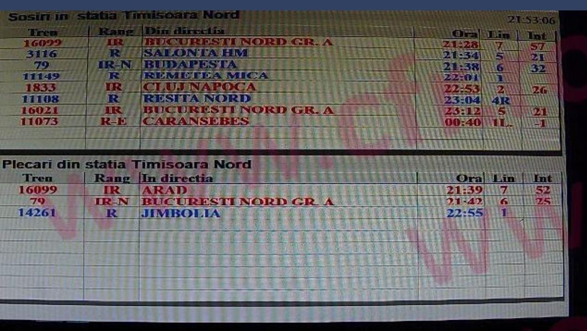
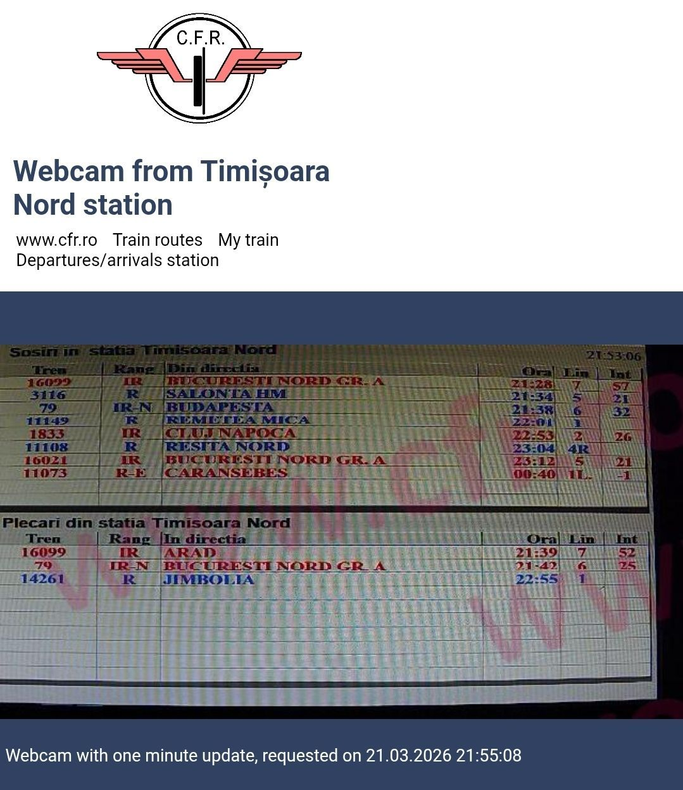

Journey 03 · București Note 1 of 5 Field Note
Sleeper Train to Bucureşti
An Eastern European Adventure


Over coffee in the morning, I decided to visit Bucureşti for an extended weekend. I booked some tours, a hotel, and decided to try the overnight train, choosing a single sleeper room.
I first attempted to leave for the train station a full 90 minutes early after misreading my ticket. Departure is at 2145 not 2025… no need to to show up more than an hour early! I took the time to grab dinner, fill up my water and double check my packing.
I decided that in order to make the trip to the train station, which is less than 10 mins away from the dorms according to google maps, I could leave around 2015… so a little after 2000 I put in the request for an Uber.
The Uber was 3 mins away… now 2 mins…. wait, why did they turn there? 8 mins away….
The Uber arrived and we left at 2029.
It’s okay. No need to worry. Remain calm.
I checked my ticket. Still a 16 minute buffer. This is going to be fine.
Except…
My ticket didnt say 2145.
It said 2142.
Breathe. Calm down. We cannot control this. You are already on your way. We can only ride along.
p A n I c…
No… breathe. Zen. Count the sides of the square as you breathe in and out.
2135
p a N I C
No… it’s okay. Watch the map. Mentally plan my escape. Grab the backpack, get the bag from the truck, I can run to platform 6. Can I just leave my suitcase?
2137
The map now shows the estimated arrival is 2139. Now its 2140. Now its 2139.
2140…2139….2140…
PANIC PANIC PANIC
Breathe. Forceful box breathing.
2140
Unbuckle, jump out of the car as soon as it mostly stops, rolling out like an action star. I open the trunk and grab my bag while driver is still unbuckling
“MULTUUUUU MESSSSCCCCCCCC…”
RUN… grab dropped water bottle… RUN RUN… see the platform… RUN
2141
I made it. One minute to spare. I cant breathe.
There is no train at the platform. There are lots of people.
Speed walk. Breathe.
Pantpantpantpant
Heart poundpoundpound
“Scuzați-mă, Bucharest tren, da?”
“Da.”
“Mersi, multu mesc, thank you!”
Pant pant pant
Breathe
2150…2205..2215…
Still no train.
2233
The train arrives.
Just getting to the train was certainly an interesting start to my weekend adventure. Moving from “this is far too early, just relax,” into “Now you are going to be too late!” and back around to “oh, I guess its fine,” gave me some time to reflect.
I was worried about a problem that had already been solved before I even got into the Uber – behind my schedule or not.
The visible information I had (my watch, the ticket, even the station board that is a digital display but ingeniously shared online via webcam pointed at the large screen) all said the original arrival time.
The actual system online had additional hidden information – the train had been operating under a slowly increasing delay since the morning, and was running behind schedule.
The urgency was real. It just turns out the problem wasn’t.
Originally published at fieldnotesfromabroad.com/2026/03/21/train_to_bucarest/